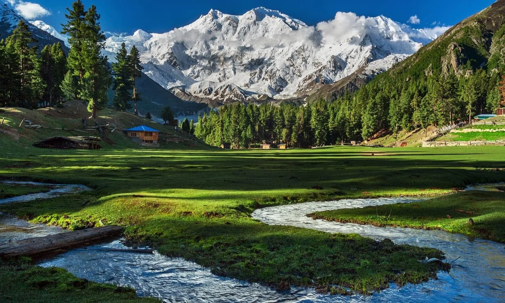

Fairy Meadows is a high-mountain meadow known for its dramatic view toward Nanga Parbat. Reaching it is part of the adventure: the journey commonly involves road travel to the Raikot Bridge area, a local jeep ride on a demanding mountain track, and a trek to the meadow. Plan for changing weather, limited services and a slower pace than an ordinary sightseeing trip.
What makes Fairy Meadows special
The meadow combines open alpine grassland, forest edges and a close view of the Nanga Parbat massif. Sunrise and clear early mornings can offer the sharpest mountain views, but cloud and weather can change quickly. Treat the landscape as a wilderness destination rather than a resort with guaranteed conditions.
How to plan the route
Most itineraries approach from the Karakoram Highway near Raikot Bridge. Local transport arrangements and road access can change, so confirm the current jeep departure point, track status and trekking arrangements with a reliable local operator before setting out. Do not assume a private car can drive all the way to the meadow.
Trekking preparation
Wear supportive shoes with good grip, carry water and snacks, and allow enough daylight for the walk. The trail can be uneven, muddy or slippery. Walk at a pace that suits the least experienced person in your group, and consider a local guide if you are unfamiliar with mountain trails.
Camping and overnight stays
Guest huts and camping options may be available, but facilities are simpler than in towns. Confirm bedding, meals, washroom access, charging options and payment arrangements in advance. Bring warm layers even in summer; nights at altitude can feel cold.
Best time and weather
The main travel window is generally in the warmer months, but exact access depends on snow, rainfall, landslides and local decisions. Shoulder-season conditions can be unpredictable. Check a current local forecast and access report shortly before departure, and be ready to change plans.
Packing checklist
Pack layered clothing, a waterproof outer layer, sun protection, a headlamp, personal medication, a reusable water bottle, cash and a charged phone or power bank. Mobile coverage and electricity can be limited, so tell someone your itinerary and expected return time.
Responsible mountain travel
Use established paths, take all litter back with you, avoid disturbing wildlife and keep noise low around camps. Respect local communities and follow guide instructions on the jeep track and trail. Never pressure a driver to continue in unsafe conditions.
Suggested itinerary
Allow at least two days for a relaxed visit: travel to the Raikot area and stay nearby if needed, continue to the meadow the next day, spend time on the trail and viewpoints, then return with adequate daylight. Add buffer time rather than relying on tight connections.
Plan your Pakistan trip
Travel conditions, opening times and access can change. Confirm current details before departure and allow flexibility for weather or road delays. Past Enlighten can help you discuss routes and trip timing.
Ask Past Enlighten